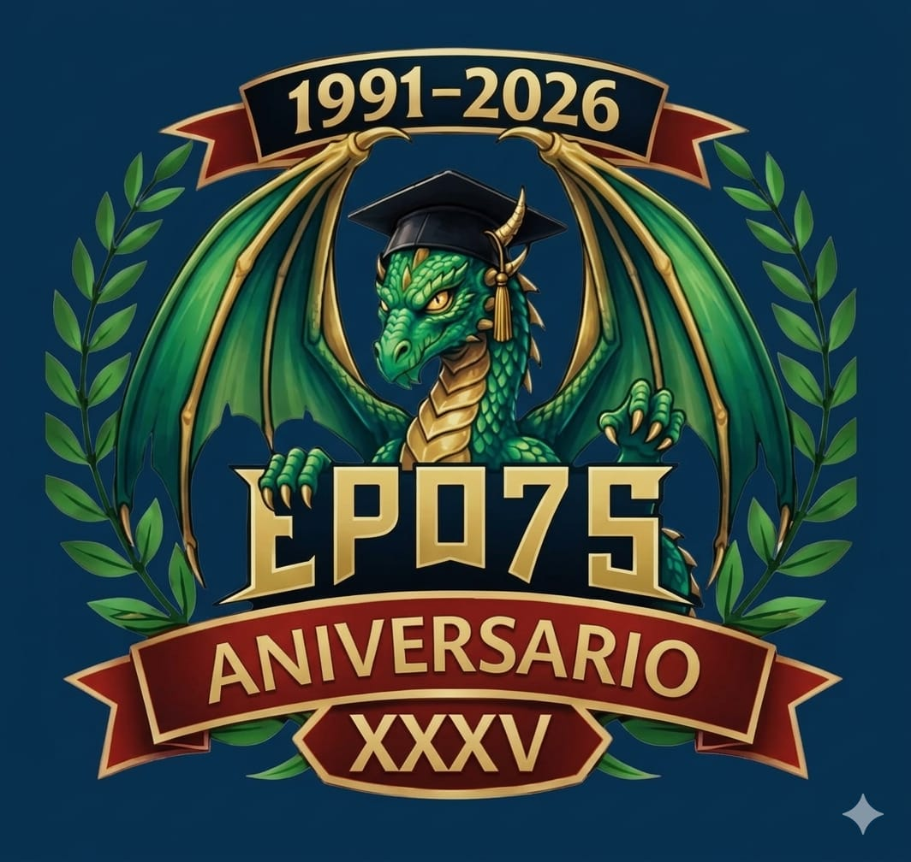
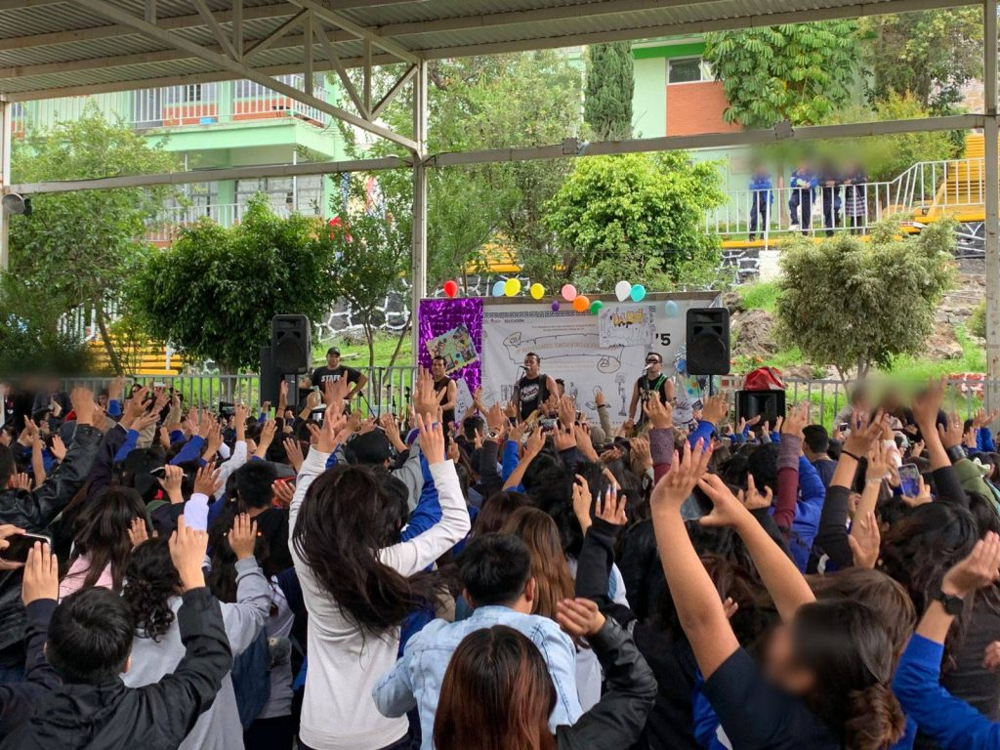
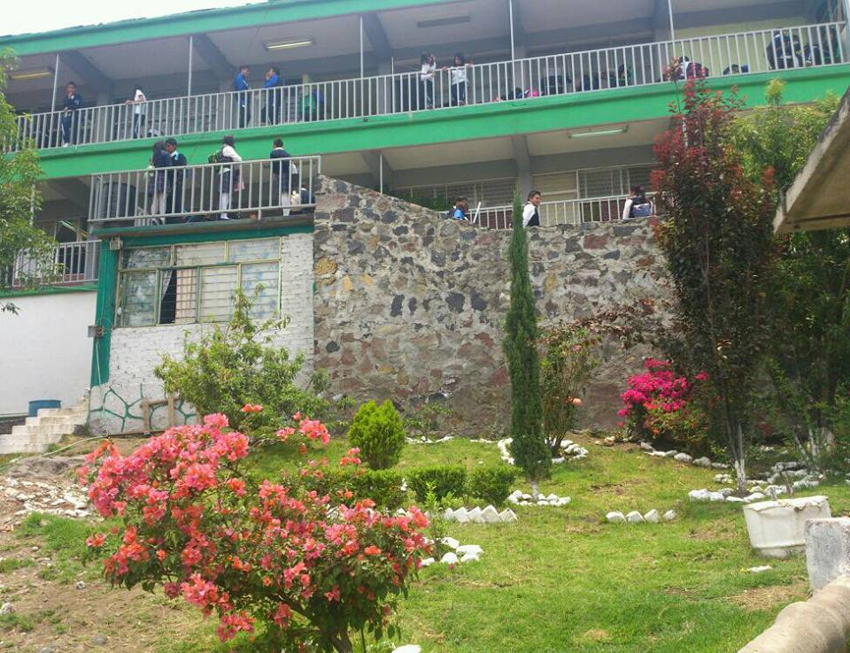

La Escuela Preparatoria Oficial No. 75 Es una institución educativa pública, ubicada en el municipio de Chimalhuacán, Estado de México.
Su objetivo, como prepa, es ser líder en su región,
ofreciendo un servicio educativo de calidad que prepara a los estudiantes tanto para los retos académicos como para su desarrollo personal. La institución cuenta con turnos matutino y vespertino, ambos turnos, con validación ante la SEP. En sus instalaciones vamos a pder encontar Lab. De Cómputo, Inglés y CIencias , como también,
Espacios de recreacoón y la Formación,como son; Las Canchas, Salas Audiovisuales y un Huerto Escolar.

La institución cuenta con más de 30 años de trayectoria(desde 1991-2026) al servicio de la comunidad estudiantil de Chimalhuacán; A lo largo de estas tres décadas, la escuela ha consolidado una cultura de trabajo basada en la mejora constante de sus instalaciones y métodos de enseñanza, como también; Ha integrado progresivamente herramientas digitales y procesos de gestión en línea para facilitar trámites administrativos y al mismo tiempo manteniendo el compromiso de ofrecer un espacio seguro y formativo para toda su comunidad.
Es por ello, que la institución se mantiene activa y actualizada, gestionando sus procesos académicos mendiante estos circulares y plataformas digitales oficiales que garatizan la transparencia para los padres de familia y alumnos. Con el fin de adaptarse a las necesidades de las nuevas generaciones.


No solo nos enfocamos en el salón de clases, también, formentamos el desarrollo de habilidades deportivas, culturales, y técnologicas que te preparan para la vida real. Además contamos con docentes comprometidos y orientadores que te guiaran en cada paso de tu trayectoria académica. Somos un referente educativo superior en Chimalhuacá, respaldados por una comunidad que valora el esfuerzo y la superación constante de cada uno de nuestros alumnos.
De La Cruz 8, San Lorenzo, Chimalhuacán, 56340, Edo.México
(52-55) 5111-8053
prepa75@yahoo.com.mx